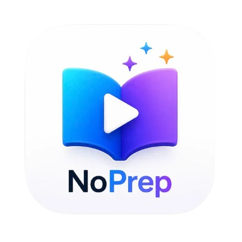

NoPrep
Classroom games and materials for teachers, with no preparation.
What NoPrep is for
NoPrep helps language teachers run lively lessons without spending evenings preparing them. A teacher makes a topic once (a list of words, sentences, pictures and recordings) and NoPrep turns it into ready-to-play classroom games and activities for the projector or interactive board.
- Games from one topic: flip tiles, spin wheel, pop the balloon, word search, spelling, matching pairs, anagrams, team games and more.
- Reading, writing and speaking practice: reading tasks, writing workshops, and speaking mock exams.
- Interactive books: teachers add their course book pages and put games, audio, videos (with subtitles made on the device) and answer keys right on the page.
- Optional AI help: making a topic from a book page, preparing tasks, voices and pictures, with an AI the teacher chooses.
Who it is for
Teachers, mainly of English and other languages, in classrooms and online lessons. NoPrep has no student accounts: the teacher runs it on their own computer, phone or browser.
Where it runs
- Windows desktop app
- Android app
- Web, here at noprep.netlify.app
Why NoPrep asks for Google Drive
Teachers' topics are kept on their own device. To keep them safe, a teacher can choose Link Google Drive. NoPrep then:
- creates one folder, "No-Prep backup", in the teacher's own Google Drive;
- saves a copy of each topic there (one file per topic) whenever the teacher saves it;
- can share that folder by link with colleagues, only when the teacher asks.
NoPrep asks only for access to the files it creates; it cannot see anything else in the teacher's Drive. It also reads the teacher's email address to show which account is linked. Linking is optional, and can be stopped at any time with Unlink in the app's Quick Links.
Privacy
NoPrep has no advertising and no tracking, and does not sell or share personal data. Read the full Privacy Policy.